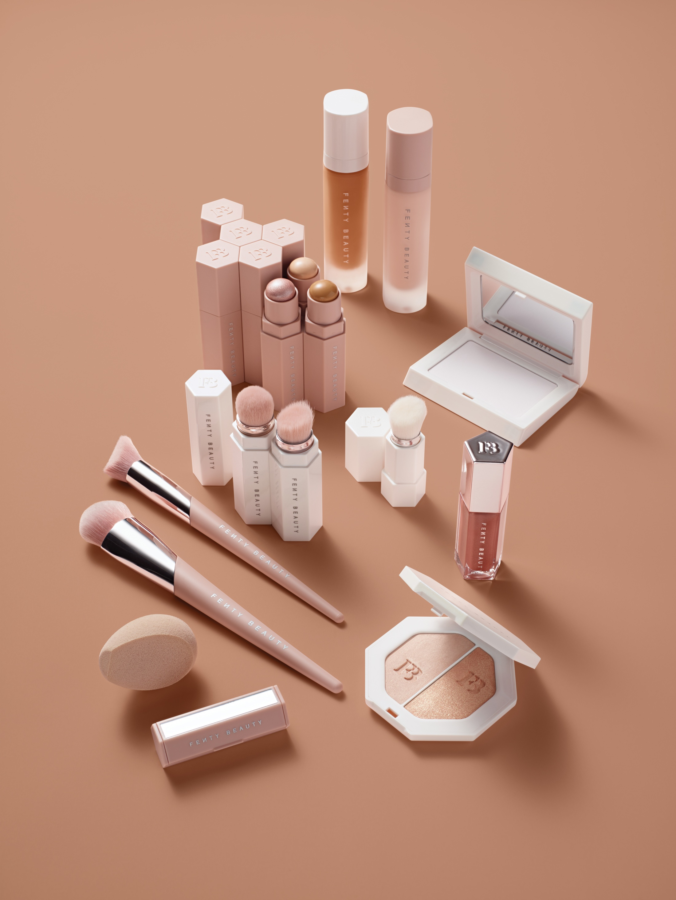
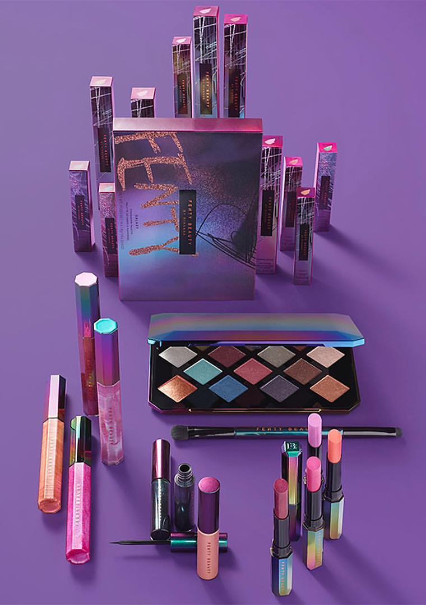
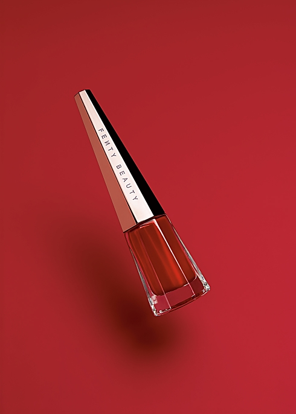
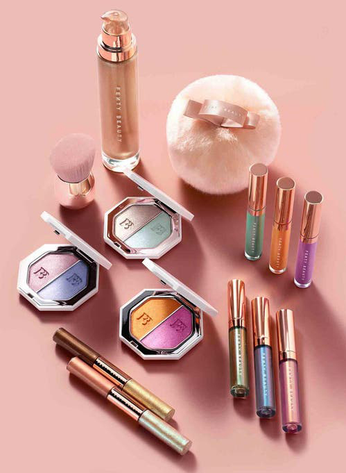

FEИTY BEAUTY
Rihanna ble inspirert til å skape FENTY Beauty etter mange år med eksperimentering med det beste innen skjønnhet – og fortsatt se et tomrom i bransjen for produkter som passet for alle hudtyper og toner. Hun lanserte en makeup-linje «slik at kvinner overalt kunne inkluderes,» med fokus på et bredt spekter av foundations for hudtoner som tradisjonelt sett har blitt utelatt, og å skape formler som fungerer for alle hudtyper og fremhever universelle nyanser.
Rihanna skaper sminke for å inspirere: «Sminke er der for deg for å ha det gøy med» sier hun «Det burde aldri føles som press. Det burde aldri føles som en uniform. Føl deg fri til å ta sjanser og tør å gjøre noe nytt eller annerledes.»

LANSERING
Fenty Beauty ble lansert 8. september 2017 og produktene som traff hyllene da var:
-Pro Filt’r Soft Matte Longwear Foundation i 40 nyanser
-Pro Filt’r Instant Retouch Primer
-Match Stix Matte Skinstick – 20 varianter
-Match Stix Shimmer Skinstick – 10 varianter
-Killawatt Freestyle Highlighter – 6 varianter
-Universal Lip Luminizer Gloss Bomb
-Full-Bodied Foundation Brush 110
-Cheek-Hugging Highlight Brush 120
-Precision Makeup Sponge 100
-Portable Contour & Conceal Brush 150
-Portable Highlighter Brush 140
-Portable Touch Up Brush 130
-Invisimatte Blotting Powder
-Invisimatte Blotting Paper
-Invisimatte Blotting Paper Refill

Galaxy Collection - Høytid 2017
Galaxy Kolleksjonen var Limited Edition og kom ut for salg 13. oktober 2017. Den inneholdt:
-Galaxy Eyeshadow Palette
-Galaxy 2-way Eyeshadow brush
-Eclipse 2-in-1 Glitter Release Eyeliner – 3 varianter
-Starlitz Hyper-Glitz Lipstick – 4 varianter
-Cosmic Gloss Lip Glitter – 4 varianter

Stunna Lip Paint
Stunna Lip Paint kom ensom ut 23. november 2017 i en universal rødfarge som passer alle hudtoner.
-Stunna Lip Paint Longwear Fluid Lip Color

Mattemoiselle
Mattemoiselle kom som en serie på hele 14 matte universale leppestifter 26.desember 2017.
-Mattemosielle Plush Matte Lipstick – 14 varianter

Beach, Please! - Sommer 2018
Beach, Please kolleksjonen inneholdt limited edition produkter i tillegg til 3 nye Killawatt Highighters og en kabuki børste som gled inn i det permanente utvalget fra Fenty Beauty.
-Killawatt Foil Freestyle Highligther Duo – 3 varianter
-Summer Daze/Summer Nights Iridescent Lip Luminizer Trio – 2 varianter
-Island Bling 2-in-1 Liquid Eye Shimmer – 2 varianter
-Fairy Bomb Glittering Pom Pom
-Face & Body Kabuki Brush 160
-Body Lava Shimmering body luminizers – 2 varianter
